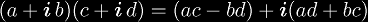
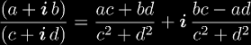
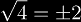

Since tetration is iterated exponentials, we must have a firm understanding of exponentiation before we can begin to fully understand tetration. Exponentiation can be viewed as iterated multiples, so we will start be assuming a complete understanding of multiplication. Although there are definitions of multiplication and exponentiation to more general spaces, we will confine our discussion to multiplication and exponentiation defined over complex numbers.
Multiplication of two complex numbers is defined as . Exponentiation is defined as a0 = 1, a1 = a, an+1 = a × an. Using this together with complex multiplication we can evaluate exponentiation for complex bases and positive integer exponents. For negative exponents, we notice that an/a = an - 1, which we can use recursively. But this depends on the knowledge of complex division, which is defined as 
Complex numbers and complex multiplication forms an Abelian group, which allows exponentiation to have some nice properties, but the closest algebraic structure exponentiation forms with complex numbers would be a quasigroup, if it werent for the fact that roots and logarithms are not single-valued. Despite this ambiguity, there are two ways to coerce exponentiation into satisfying the quasigroup structure.
The second option is more in line with the intuitive sense of roots and logarithms, where . However, set-valued functions are more difficult to calculate with, since during computation, the traditional function must be applied multiple times to obtain the set, and anytime a single value is obtained, one must prove that there are no other values to show that the output has only one element.
Show Plot[Re[ExpFacApprox[x]Zeta[2x](x - 1/2)], {x, -8, 4}, PlotRange->{-1,1}, PlotStyle->Hue[2/3]], Plot[Im[ExpFacApprox[x]Zeta[2x](x - 1/2)], {x, -8, 4}, PlotRange->{-4,4}, PlotStyle->Hue[0]]
|
Copyright © 2010 Andrew Robbins ( |
|